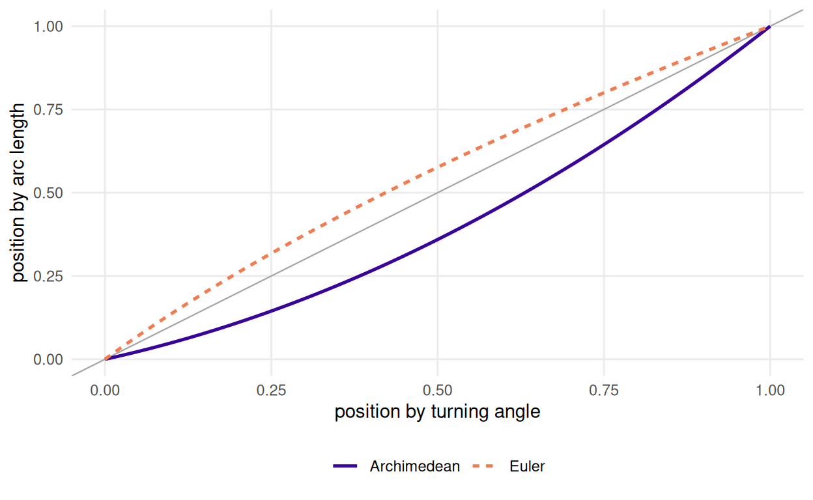
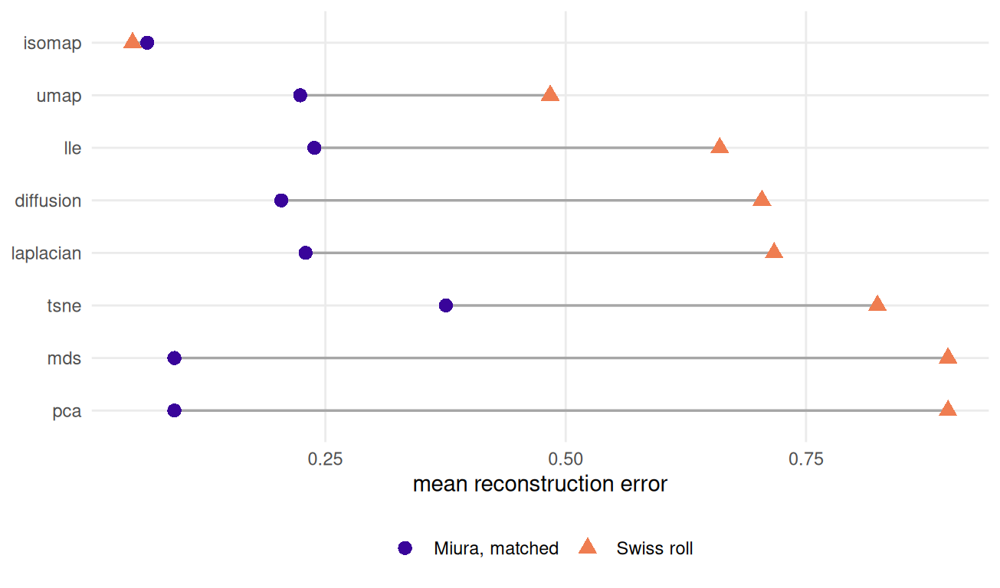

11 Crease patterns vs. the Swiss roll
R. Heller · Date: 2026-07-29 · Last changed: 2026-09-07
Does the new benchmark actually add anything?
11.1 What this chapter answers
Yes — and not the thing this book set out to claim.
The claim under test was that a crease pattern is a harder benchmark than the Swiss roll: that folding reaches difficulty the classical surfaces cannot. Experiment E1 was run before this chapter was drafted, precisely so that the prose could not outlive a refutation, and it refuted it. At matched difficulty a folded Miura is easier than a Swiss roll, and it tells the methods apart about five times less well.
What survives is narrower and better founded. The Swiss roll is one fixed geometry, and the answer key usually shipped with it is not its isometric chart. The severed sphere has no exact answer key and, by Gauss’s theorem, cannot have one. A crease pattern is a whole family indexed by \(\theta\) whose chart is exact at every point of it. The contribution is the answer key and the axis, not the difficulty — which is why Chapters 8 and 9 are where it pays, and this chapter is where it does not.
11.2 Setup
classic <- read_run("data/processed/classic-grid.rds", "d71fb3ba0ad5de68")
crease <- read_run("data/processed/benchmark-grid.rds", "2483a468d82d4d64")
e1 <- read_run("data/processed/e1-controlled.rds", "01d82cfe8f45bb44")
armB <- read_run("data/processed/e1-armB.rds", "cbf9ce13782a556d")classic-grid.rds is the Swiss roll, the S-curve and the severed sphere scored
through the same grid_cell() the crease grid uses: same methods, same metrics,
same floor. Nothing on either side is special-cased. The two E1 artefacts are the
controlled arm and the crease-count arm of the experiment that decided this
chapter’s claim, and scripts/experiment-e1.R produced both before it was
drafted.
11.3 Background
11.3.1 The Swiss roll has an exact chart, and it is usually not the one shipped
A Swiss roll is a rectangle of paper wound onto a spiral. It arrived with Isomap (6), appeared the same year in the LLE paper beside the S-curve (30), and has been the first figure of the subject ever since (12).
It is developable, so it does have an isometric chart, and the chart is cheap: arc length along the spiral paired with height. For the Archimedean spiral \(r = at\) the arc length is closed form,
\[s(t) = \frac{a}{2}\left[\,t\sqrt{1+t^{2}} + \operatorname{asinh} t\,\right],\]
which is archimedean_arclength() in R/baselines.R. So the Swiss roll is not
short of ground truth. What it is usually short of is the right ground truth:
the key shipped with it is the generating angle, and arc length is not
proportional to angle.
roll_ang <- swiss_roll(N_DEFAULT, turns = 2, seed = BENCH_SEEDS[1],
isometric = FALSE)
eul_ang <- swiss_roll(N_DEFAULT, turns = 2, seed = BENCH_SEEDS[1],
isometric = FALSE, spiral = "euler")
key_gap <- c(archimedean = reconstruction_error(roll_ang$truth, roll_ang$iso_chart),
euler = reconstruction_error(eul_ang$truth, eul_ang$iso_chart))
key_qnx <- c(archimedean = qnx(roll_ang$truth, roll_ang$iso_chart, K = K_QNX),
euler = qnx(eul_ang$truth, eul_ang$iso_chart, K = K_QNX))
sphere <- severed_sphere(N_DEFAULT, cap = 0.4, seed = BENCH_SEEDS[1])
stretch <- (pi - sphere$cap) / sin(sphere$cap) # r / (R sin(r/R)) at the rim
n_sphere <- sum(classic$family == "severed_sphere" & classic$ran)
cat(strwrap(tryCatch(require_exact_truth(sphere, "a reconstruction score"),
error = conditionMessage), 72), sep = "\n")a reconstruction score needs exact ground truth, and this sample does
not have it: severed_sphere carries a conventional chart (equidistant
(a convention; no isometric chart exists)). Scoring against it measures
agreement with a convention, not recovery of a structure.Score the customary angle chart against the arc-length chart on one two-turn roll and the gap is 0.567 in normalised Procrustes RMSE, with \(Q_{NX}\) at 0.462. That is not a rounding difference. An evaluation against the angle chart measures recovery of a reparameterisation, and the factor by which it is wrong is a property of the roll rather than of the method under test.
The defect is known and was fixed in 2017. Schoeneman et al. proposed the Euler Isometric Swiss Roll (10), replacing the Archimedean spiral with the Fresnel integrals; it has been used since (38). Their stated reason is that curvature proportional to arc length “ensures that isometry is preserved”. The checkable reason is simpler: the Fresnel parameterisation is unit speed, so the parameter is arc length by definition. Label an Euler roll by its turning angle instead and the same error appears at 0.258 — smaller, and not zero.
Every Swiss roll in this book is scored against arc length. Figure 11.1 is why.

Figure 11.1: Position along the spiral measured two ways, on the same sample. The grey diagonal is where the two agree. The Archimedean roll’s customary angle chart departs from arc length across the whole sweep; the Euler roll’s departs far less, because its parameterisation is unit speed.
11.3.2 The severed sphere has no answer key at all
Say it bluntly. A sphere has constant positive Gaussian curvature, the plane has
none, and curvature is intrinsic — Gauss’s Theorema Egregium. No chart of any
patch of a sphere preserves distances, however small the patch and however
clever the chart. severed_sphere() therefore ships a convention: the
azimuthal-equidistant chart about the retained pole, which gets every radial
geodesic exactly right and stretches every circle around it by
\(r / (R\sin(r/R))\) — a factor reaching 7.04 at the rim of the
largest patch in the classic grid.
The object knows this, and the refusal printed above is require_exact_truth()
reading the flag. That guard fires only where something calls it. grid_cell()
does not, so the classic grid scored the severed sphere 1280 times,
exactly as it scored the roll. Those numbers exist, they are in the committed
artefact, and this chapter reports none of them as recovery of a structure.
11.4 Difficulty has two axes, not one
11.4.1 The knob has to move the right thing
Both families have a difficulty parameter, and both parameters have to be checked, because the obvious version of each does nothing.
For the Swiss roll it is the turn count, and the obvious parameterisation — let
the angle run further and the radius run with it — adds revolutions at constant
sheet spacing, so the \(k\)-nearest-neighbour graph stays faithful however many
turns are asked for. swiss_roll() instead holds the outer radius fixed and
fits the requested revolutions inside it, so the radial gap between consecutive
sheets falls as one over the turn count. That is Balasubramanian and Schwartz’s
gap-to-spacing ratio \(g/s\) (9), and it is the one axis
both families can be plotted against.
For a crease pattern it is \(\theta\). But folding does two things at once: it
brings distant sheets together and it lifts the sheet out of the plane. The
second is what non_planarity() measures — the share of ambient variance no
plane captures, the third principal eigenvalue over their sum.
axes <- local({
seeds <- BENCH_SEEDS[1:3]
one <- function(m, family, par) data.frame(
family = family, par = par, np = non_planarity(m),
gs = branch_gap(m)$ratio, sc = short_circuit_index(m))
run <- function(vals, family, make) do.call(rbind, lapply(vals, function(v)
do.call(rbind, lapply(seeds, function(s) one(make(v, s), family, v)))))
rbind(
run(sort(unique(classic$par[classic$family == "swiss_roll"])), "Swiss roll",
function(v, s) swiss_roll(N_DEFAULT, turns = v, seed = s)),
run(sort(unique(classic$par[classic$family == "severed_sphere"])),
"severed sphere", function(v, s) severed_sphere(N_DEFAULT, cap = v, seed = s)),
run(NA_real_, "S-curve", function(v, s) s_curve(N_DEFAULT, seed = s)),
run(THETA_GRID, "Miura", function(v, s)
sample_manifold(miura_ori(6L, 6L), theta = v, n = N_DEFAULT, seed = s)))
})
# The S-curve is added by hand because it has no difficulty parameter at all;
# aggregate() drops a group whose key is NA, and inventing a key would be worse.
cell <- aggregate(cbind(np, gs, sc) ~ family + par, axes, mean)
sc_rows <- axes[axes$family == "S-curve", ]
cell <- rbind(cell, data.frame(family = "S-curve", par = NA_real_,
np = mean(sc_rows$np), gs = mean(sc_rows$gs),
sc = mean(sc_rows$sc)))
np_top <- max(cell$np[cell$family == "Miura"])
np_bot <- min(cell$np[cell$family != "Miura"])
swept <- cell[cell$family != "S-curve", ]
ggplot2::ggplot(cell, ggplot2::aes(gs, np, colour = family, shape = family)) +
# Finite bounds, not +/- Inf: under a log transform an infinite limit is NaN
# and the band silently does not draw.
ggplot2::annotate("rect", xmin = min(cell$gs) / 2, xmax = max(cell$gs) * 2,
ymin = np_top, ymax = np_bot, fill = "grey70", alpha = 0.4) +
ggplot2::geom_line(data = swept[order(swept$family, swept$par), ],
ggplot2::aes(group = family), linewidth = 0.5) +
ggplot2::geom_point(size = 2.3) +
ggplot2::scale_x_continuous(transform = c("log10", "reverse")) +
scale_colour_book(begin = 0.05, end = 0.78) +
ggplot2::labs(x = "gap-to-spacing ratio (log scale, harder to the right)",
y = "ambient non-planarity", colour = NULL, shape = NULL) +
theme_fold()![A scatter plot with the gap-to-spacing ratio on a reversed logarithmic horizontal axis, so difficulty increases to the right, and ambient non-planarity from zero to about 0.32 on the vertical axis. A connected run of Miura points sweeps along the bottom of the panel and never rises above about 0.06. A connected run of Swiss roll points sits in a narrow horizontal band near 0.09 to 0.13, with the S-curve as a single point beside them, and severed sphere points well above at 0.22 to 0.30. A grey shaded horizontal band separates the Miura run from everything else and contains no points.](11-versus-swiss-roll_files/figure-html/comp-plane-1.png)
Figure 11.2: The two difficulty axes. Each family sweeps its own parameter; difficulty rises to the right. The shaded band is empty, so over this design there is no setting at which a folded Miura and a classical surface are comparable on both axes at once.
The ranges are disjoint. Across the whole \(\theta\) sweep a six-by-six Miura covers non-planarity from 0.000 to 0.056; the Swiss rolls in the classic grid cover 0.090 to 0.124, the S-curve sits at 0.116, and the severed sphere starts at 0.218 and rises. The corridor between 0.056 and 0.090 is empty.
Figure 11.2 is the argument. A sweep of \(\theta\) alone is not a controlled comparison, because it moves both axes together and the families never meet on the second. At the easy end of the \(g/s\) range a Miura is a flat plane, which PCA recovers exactly; a Swiss roll at the same separation is still curved, and PCA cannot.
The third column of cell is the reason \(g/s\) carries the first axis rather
than the more obvious candidate. short_circuit_index() asks whether the
neighbours a method would actually pick are neighbours on the surface too; it is
scale-free, bounded above by one, and comparable across families, which makes it
the better-behaved statistic of the two. It is also nearly constant over most of
this design. Across the classic grid’s turn range it falls only from
1.000 to
0.703, and almost all of
that drop happens at the last two settings; across the whole \(\theta\) sweep the
Miura falls from 1.000 to
0.799; the severed sphere
never leaves
0.999. A difficulty
axis that is flat until the very end of the range cannot order the settings in
between, so the comparison is made on \(g/s\) and the short-circuit index is
reported beside it as the check that \(g/s\) is not measuring the sampler.
11.4.2 The fix, and what it costs
\(\theta\) is not the only knob the generator has. Cell count dominates
non-planarity: a small Miura at a wide opening angle and a deep fold reaches
above anything the Swiss roll produces, while a six-by-six at the same angles
stays an order of magnitude below. Sweeping \((n_x, \alpha, \theta)\) decouples the
axes and creates the overlap a \(\theta\) sweep lacks. That is what E1’s second arm
did, and it is what e1-controlled.rds holds.
Crease count on its own does nothing. Arm B holds \(g/s\) fixed and varies the tessellation from nine facets to a hundred and forty-four; PCA’s mean error moves between 0.039 and 0.071, Isomap’s between 0.028 and 0.038, and neither monotonically. Error is flat in crease count at matched separation. Whatever makes these patterns hard, it is not that they have creases.
11.4.3 One geometry against a family
This is the structural difference, and it survives everything the measurements
below do to the rest of the chapter. A Swiss roll’s turn count changes how
tightly one shape is wound; it is a real knob, and swiss_roll() makes it one. A
crease pattern gives a family: the same exact chart at every \(\theta\), so a
method’s score is a curve rather than a point and the shape of the curve is a
property of the method. Nothing about the classical surfaces forbids such a
sweep, and one is drawn here. What they cannot supply is the exact key at the far
end of it.
Nor have they had to break the habit that goes with a fixed geometry. A Swiss roll’s answer key is two-dimensional and its failures are legible, so the customary report is a picture: the unrolled sheet either comes out as a rectangle or it does not, and the reader is invited to agree. That is a serviceable way to show a method working and a poor way to compare two that both nearly work — which is exactly the regime the dispute over two-dimensional embeddings lives in (1,2). A parameterised family forces the question into a number at every setting, and the number is what the rest of this chapter argues over.
11.5 Results
11.5.1 The head-to-head, matched on separation alone
Match each Swiss roll to the \(\theta\) whose measured \(g/s\) is nearest, keep the ones landing inside the crease family’s range, and score both sides from the committed grids at the same eight methods, the same twenty seeds and no noise.
mi <- cell[cell$family == "Miura", ]
ro <- cell[cell$family == "Swiss roll", ]
ro <- ro[ro$gs >= min(mi$gs) & ro$gs <= max(mi$gs), ]
near <- vapply(ro$gs, function(x) which.min(abs(mi$gs - x)), integer(1))
ro$theta <- mi$par[near]
ro$mismatch <- abs(mi$gs[near] - ro$gs) / ro$gs
A <- classic[classic$family == "swiss_roll" & classic$noise == "none" &
classic$ran & classic$par %in% ro$par, ]
B <- crease[crease$noise == "none" & crease$ran & crease$theta %in% ro$theta, ]
stopifnot(all(A$seed %in% BENCH_SEEDS), all(B$seed %in% BENCH_SEEDS))
h <- merge(setNames(aggregate(cbind(rmse, qnx) ~ method, A, mean),
c("method", "roll_rmse", "roll_qnx")),
setNames(aggregate(cbind(rmse, qnx) ~ method, B, mean),
c("method", "cr_rmse", "cr_qnx")))
h <- h[order(h$roll_rmse), ]
rho <- c(rmse = cor(h$roll_rmse, h$cr_rmse, method = "spearman"),
qnx = cor(h$roll_qnx, h$cr_qnx, method = "spearman"))
gap <- function(d, key) {
w <- reshape(d[d$method %in% c("pca", "isomap"), c(key, "seed", "method", "rmse")],
idvar = c(key, "seed"), timevar = "method", direction = "wide")
abs(w$rmse.pca - w$rmse.isomap)
}
naive <- mean(gap(A, "par")) / mean(gap(B, "theta"))That leaves 3 matched pairs, agreeing to within 6.8% in \(g/s\).

Figure 11.3: Mean reconstruction error of eight methods on a Swiss roll and on a Miura matched to it in gap-to-spacing ratio. Methods are ordered by their Swiss-roll score, and the connecting segments make the reordering visible: the two linear methods move from joint last to near the front.
The two rankings barely correlate: Spearman 0.036 on reconstruction error and -0.060 on \(Q_{NX}\). So the classical benchmark does rank methods differently — and the order it produces is the one the field has internalised. Isomap first, the linear methods joint last: the picture the Swiss roll was introduced to make (6), and the one against which the neighbour embeddings have been read ever since (7,8).
The reordering is not a shuffle at the margin. PCA and classical MDS score 0.898 on the roll, joint last of eight, and 0.093 on the Miura matched to it, which is second. Isomap barely moves — 0.049 against 0.065 — and neither does its \(Q_{NX}\), 0.860 against 0.864. Every method scores better on the crease side, which is the first thing to notice: at matched separation the folded sheet is the easier object for all eight. What changes the order is that the linear methods gain far more from the change than the geodesic one does.
11.5.2 Why that answer is the wrong one
Because the match was on one axis and there are two. PCA does well on a folded Miura for a reason that has nothing to do with creases: even at the largest \(\theta\) this grid uses the sheet is still nearly planar, and a nearly planar object is what PCA is optimal for. Read off this comparison, the Swiss roll separates PCA from Isomap 30 times better than the crease pattern does — a number produced almost entirely by the axis the match failed to control.
11.5.3 The controlled comparison
e1-controlled.rds sweeps \((n_x, \alpha, \theta)\) against turns, and has an
overlap region in which both axes lie inside the joint range of the two families.
ctl <- local({
s <- e1[is.finite(e1$rmse), ]; s$lg <- log(s$gs)
s[s$lg >= max(tapply(s$lg, s$kind, min)) & s$lg <= min(tapply(s$lg, s$kind, max)) &
s$np >= max(tapply(s$np, s$kind, min)) & s$np <= min(tapply(s$np, s$kind, max)), ]
})
w <- reshape(ctl[, c("kind", "label", "seed", "method", "rmse")],
idvar = c("kind", "label", "seed"), timevar = "method",
direction = "wide")
w$spread <- abs(w$rmse.pca - w$rmse.isomap)
sp <- tapply(w$spread, w$kind, mean)
ratio <- sp[["classic"]] / sp[["crease"]]
set.seed(11) # cluster bootstrap, resampling whole settings
boot <- replicate(2000, {
r <- vapply(split(w, w$kind), function(d) {
l <- sample(unique(d$label), length(unique(d$label)), replace = TRUE)
mean(unlist(lapply(l, function(x) d$spread[d$label == x])))
}, numeric(1))
r[["classic"]] / r[["crease"]]
})
ci <- quantile(boot, c(0.025, 0.975))
fit <- lm(spread ~ I(kind == "classic"), data = w) # cluster-robust by setting
X <- model.matrix(fit); u <- residuals(fit); bread <- solve(crossprod(X))
meat <- Reduce(`+`, lapply(unique(w$label), function(l) {
i <- w$label == l
tcrossprod(crossprod(X[i, , drop = FALSE], u[i]))
}))
tval <- coef(fit)[2] / sqrt((bread %*% meat %*% bread)[2, 2])
pval <- 2 * pt(-abs(tval), df = length(unique(w$label)) - 2)
mscore <- aggregate(cbind(rmse, qnx) ~ kind + method, ctl, mean)
score <- function(k, m, col) mscore[[col]][mscore$kind == k & mscore$method == m]9 crease settings and 5 Swiss rolls survive the double restriction. Inside it the ranking is identical: Isomap first on both families, PCA and classical MDS behind it on both. Nothing flips.
What differs is the spread. The mean gap between PCA and Isomap is 0.574 on the classical side against 0.113 on the crease side — a ratio of 5.06, with a cluster bootstrap interval over settings of 1.7 to 9.8 and a cluster-robust \(p\) of 0.02. The absolute scores go the same way: PCA at 0.922 on a roll against 0.286 on a crease pattern, Isomap at 0.348 against 0.183.
State it in the book’s own voice. Crease patterns are not a harder benchmark; they are an easier one that discriminates less. A benchmark earns its keep by telling methods apart, and on that criterion the Swiss roll wins by a factor of about five.
What that costs a reader is worth being concrete about. A benchmark whose methods sit 0.113 apart needs more replicates to separate two of them than one whose methods sit 0.574 apart. Chapter 10 turns that into a statistic of its own and reports where along the \(\theta\) axis this benchmark has any resolving power at all; read next to the ratio above, the two are the same observation from opposite ends. It does not make the crease pattern useless — a benchmark whose answer key is exact can be asked questions a benchmark whose answer key is a convention cannot, and Chapter 9 asks them — but anyone choosing between the two for a straight method comparison should choose the roll, and this chapter is where the book says so.
![A line chart with the gap-to-spacing ratio on a reversed logarithmic horizontal axis, so difficulty increases to the right, and the mean absolute difference between PCA and Isomap reconstruction error on the vertical axis from zero to about one. The Swiss roll curve climbs from about 0.4 at the left to a peak near 0.9 in the middle, then drops almost vertically to zero and stays there across the whole right-hand half. The Miura curve is nearly flat just above zero across its entire range, never exceeding about 0.05.](11-versus-swiss-roll_files/figure-html/comp-spread-1.png)
Figure 11.4: How far apart each benchmark holds PCA and Isomap, across its whole sweep and at every seed the grids carry. Difficulty rises to the right. The Miura curve stays near the floor throughout. The Swiss roll separates the two methods widely over a middle window and then stops separating them at all, because past that window Isomap short-circuits and fails as completely as PCA.
Figure 11.4 attaches a caveat to that factor of five. The Swiss roll’s discriminating power is not monotone in its own difficulty. It reaches 0.909 in a middle window and then collapses to 0.0003 at the tightest rolls, where Isomap short-circuits and fails as completely as PCA does — so past that window the classical benchmark separates nothing either. The settings the head-to-head matched on sit inside the peak. That is the right place to measure a benchmark, on its best window rather than its worst, but the number is a statement about Swiss rolls there and not about Swiss rolls generally.
11.6 Diagnostics
One objection deserves an answer before a reader raises it, and it is specific enough that a footnote would not do.
E1’s decisive arm sampled with boundary = TRUE, because a two-by-two Miura
leaves no room for the interior margin sample_manifold() normally draws inside.
A Miura’s unfolded outline is not convex, so for a pair straddling one of its
teeth the straight chart segment leaves the sheet and chart distance is a lower
bound on the geodesic — Chapter 2 measures this. An answer
key that understates long distances penalises the geodesic method specifically,
which is exactly the comparison being made.
labs <- unique(ctl$label[ctl$kind == "crease"])
exit <- vapply(labs, function(l) {
q <- as.numeric(strsplit(sub("^miura", "", l), "/")[[1]])
pat <- miura_ori(as.integer(q[1]), as.integer(q[1]), alpha = q[2])
chart_exit_fraction(sample_manifold(pat, theta = q[3], n = 600L,
seed = BENCH_SEEDS[1], boundary = TRUE), pat)
}, numeric(1))
loo <- vapply(labs, function(l) {
k <- w[w$kind == "classic" | w$label != l, ]
m <- tapply(k$spread, k$kind, mean)
m[["classic"]] / m[["crease"]]
}, numeric(1))Between 0.00% and 3.47% of sampled pairs are affected. Dropping the worst-affected setting moves the ratio from 5.06 to 5.11, and over the 9 leave-one-out refits it stays between 4.41 and 5.80. The approximation biases against the finding rather than for it, and no single setting carries it.
The second question a reader is entitled to ask is how much of the ratio is seed noise. Every cell above is an average over seeds — 5 in the controlled arm, 20 in the two grids — and the within-family scatter is large: the standard deviation of the PCA-to-Isomap gap across settings and seeds is 0.393 on the classical side against 0.070 on the crease side. That scatter is why the interval quoted above comes from a bootstrap over whole settings rather than over rows, and why the \(p\)-value is cluster-robust: seeds within a setting are not independent draws of the quantity being estimated, and treating them as such would report an interval several times too narrow.
11.7 Where it fails
The overlap is a corner. It holds 9 crease settings, 5 rolls, three methods and two metrics. The bootstrap interval — 1.7 to 9.8 — is the honest width of the claim, and it is wide. The head-to-head above is broader in methods and narrower in control. Neither is the study a settled answer would need.
Under the neighbourhood metric the families nearly do collapse. Isomap scores 0.773 on creases against 0.778 on Swiss rolls. The whole difference between the families sits in how badly the linear methods fail, and that is a fact about ambient non-planarity rather than about creases.
The pre-registration got nothing right. PLAN.md drafted three outcomes
before the run. The families did not collapse; they did not separate in the
registered sense, which was different rankings, and the ranking is identical;
and arm B’s null settled neither. The replacement claim is in this book because
it fits the evidence, not because its antecedent was met, and recording that is
what pre-registration is for.
The Swiss roll is still the right tool for two jobs. It is the clearest picture in the subject and it belongs in a first lecture, and a pipeline that fails on it is broken. What it cannot be is the evidence, because one fixed geometry has nowhere to put a curve.
11.8 Reproduce this
scripts/run-classic-grid.R writes classic-grid.rds, scripts/experiment-e1.R
the three E1 artefacts, scripts/run-benchmark-grid.R the crease grid; all are
committed with provenance. tests/testthat/test-baselines.R asserts the
arc-length closed form, the Fresnel error, the sphere’s stretch factor and the
refusal printed above.
11.9 Further reading
The Swiss roll and the S-curve enter with Isomap (6) and LLE (30); Lee and Verleysen (12) is the textbook treatment and the place to see how settled their role became. Balasubramanian and Schwartz (9) is one page long and is the origin of the gap-to-spacing argument this chapter’s first axis rests on.
On the answer key, Schoeneman et al. (10) is the paper that noticed the Archimedean roll’s chart was not isometric and proposed the Euler replacement, and Mahapatra and Chandola (38) use it. This chapter’s contribution is not the observation but its size.
On what a comparison of this kind can establish, Espadoto et al. (4) survey the quantitative benchmarks and Machado et al. (3) argue that the projection quality metrics they rest on are necessary but not sufficient — a caution that applies with full force to the five-fold separation reported above. The dispute about reading two-dimensional embeddings at all (1,2) is the reason this book measures rather than argues.